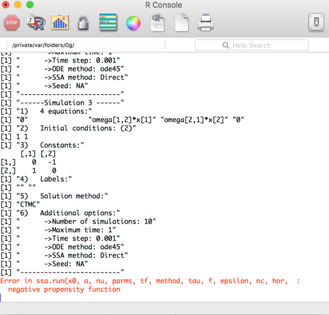

Worked example
We’ll start with a model from epidemiology: the SI model. In this case people are assumed to be either Susceptible to a disease (S) or Infected by the disease (I). Let’s do it!
Additional things you should know
Deleting stuff
Saving and Loading
Input
Options
Options are set on the Options panel. These include:
- Maximum time: Amount of time for simulating the processes. Notice that all processes start at time
t = 0. - Time step: Time step for the simulations. In the case of
Ordinary Differential Equationsrefers to the time step taken to create the numerical approximation. In the case ofDiscrete Time Markov Chainsrefers to the discrete time lapses. - Differential Equation Solver: The method the package
deSolveuses for numerically approximating theOrdinary Differential Equations. - Number of Simulations: Number of Simulations for
Continuous Time Markov ChainsorDiscrete Time Markov Chains - Seed for Simulation: Wrapper for the
set.seedfunction for setting a seed for the simulations. - Stochastic Simulation Algorithm: The method the package
GillespieSSAuses for numerically approximating theContinuous Time Markov Chains.
Error messages
Error messages are passed directly to the R console. Keep an eye on the console to check that no errors have been generated
